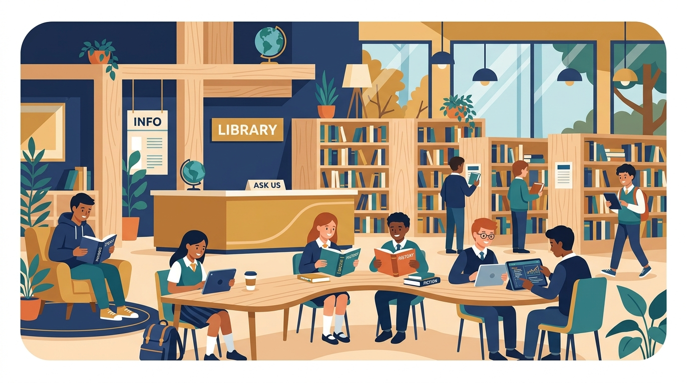
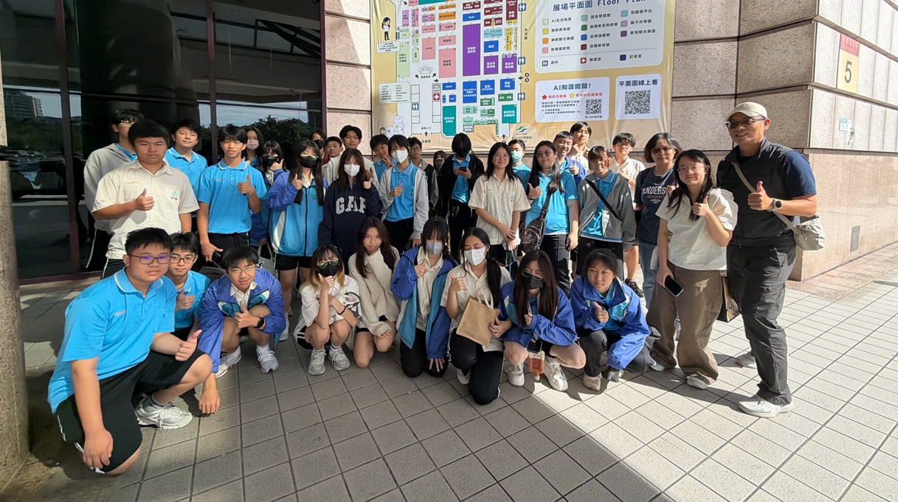
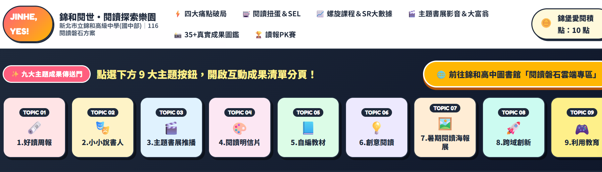

🏛️ 新北市立錦和高級中學
•
圖書館處室業務報告
•
115-1 行政會 ✕ 導師會議
115學年度 12月份行政會與導師會議-圖書館
報告單位：圖書館處室（吳孟仁主任、讀服組、採編組、資訊組） • 基準時間：115年12月時程管制版
12月會報
📢 【行政與導師會議重點配合事項速覽】
1. 🏆 狂賀！張純寧校長榮獲特優獎： 115年教育部推動教育AI及數位學習「績優人員特優獎」，於 12/09(三) 09:00-12:00 大臺南會展中心隆重受獎！
2. 📜 全國閱讀心得寫作大放異彩： 第 1151008 梯次獲 優等 4 篇、甲等 15 篇，共獲獎 19 篇！感謝龐靜儀、賴于靜、李慧娟、張鳳翔老師悉心指導。
3. ✈️ 116年日本教育旅行與錦客行旅： 教育旅行正取 35 人（高一13、高二19、高三3），預計12~1月招標；錦客行旅招募 60 人洽談配對中。
4. 💻 AIBook 觀課與數位研習登場： 11/26 葉正宏老師數學 iPad 示範觀課圓滿成功；12/08 上午八年級英語科章世宣老師、下午陳維倫老師公開觀課。
5. ⚠️ Gemini AI Pro 帳號使用警示： 因 9、10 月未使用被官方回收 10 組帳號，請獲配帳號教師每個月至少登入使用一次，共同珍惜寶貴資源。
6. 📚 四樓藏書區開放借閱與加退選： 四樓藏書區於 12 月初 正式開放借閱；自主學習期末會議 12/11 召開，跑班課程加退選 12/28~01/01 辦理。
教育部AI數位學習
⋮⋮
特優獎 🏆
張純寧校長 榮獲特優 (12/09頒獎)
全國閱讀心得寫作
⋮⋮
共 19 篇 📜
優等 4 篇 ✕ 甲等 15 篇 榮獲佳績
116年日本國際教育旅行
⋮⋮
35 位學子 ✈️
高一13/高二19/高三3 (錦客行旅60人)
12月重大管制日程
⋮⋮
10 場次 📅
公開觀課、研討會、捐車與加退選
🖼️ 圖書館近期重大研習成果照片 ✕ 榮譽榜大圖
完整收錄 6 張高解析度照片與祝賀海報，點擊任一圖片即可啟動全螢幕燈箱檢視細節
點擊放大
榮譽海報
全國閱讀心得比賽・共榮獲 19 篇大獎
優等 4 篇 ✕ 甲等 15 篇 • 感謝龐靜儀、賴于靜、李慧娟、張鳳翔老師

點擊放大
全國特優
狂賀！張純寧校長榮獲教育部 AI 數位學習特優獎
教育部績優中小學人員特優獎 • 12/09 大臺南會展中心頒獎

點擊放大
生生用平板
高二葉正宏老師 AIBook 數學公開觀課
iPad 在數學教學應用 • 學生手持平板即時繪製指數與對數函數圖形

點擊放大
國際研討會
AASVET 2026 國際學術研討會學生出席
臺科大國際技職與科技教育年會 • 拓展學子科技素養與國際發表視野

點擊放大
AI 教學社群
解鎖育見 AI 實踐力新世代成果分享會
中小學 AI 教學設計與成果交流 • 錦和高中教師團隊共學成長

點擊放大
世貿大型展覽
臺灣教育科技展 EdTech Taiwan 師生參訪
台北世貿中心現場互動體驗 • 接軌最新 AI 教育科技與智慧教材
📖 錦和閱世・閱讀探索樂園
點擊前往專區 ↗

💻 教育部磨課師 (MOOCs) AI 增能研習專區
研習時數管制